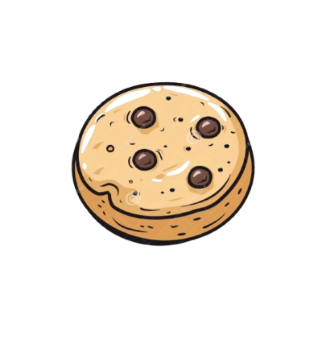

Check Out Our Yummy Ratios!

Ratios are frequently used in our everday lives: for baking, cooking, medicine, and more!
For
a delicious read, we're going to connect measurement with baking!
Baking
Ratios in baking can be used for unit conversions or adjusting recipe size.
Unit Conversions
- To convert from grams to ounces, cups to milliliters, Fahrenheit to Celsuis, we can use their conversion
"ratios" shown below,
Note: to convert from the second unit to the first, use the opposite operation(s).
- 1 Gram to Ounces: Divide the grams by 28.35
- 1 Cup to Milliliters: Multiply the cups by 236.588
- Fahrenheit degrees[call it f] to Celsuis degrees[call it c]: (formula)
c = (f - 32) * 5/9 ≈ (f - 32) *
0.556
Note: for the activity, you will only be quizzed on Fahrenheit to Celsuis, but the other measurements create some
common conversions as well!
Adjusting Recipe Size
- Often, you will have to adjust your recipe according to your serving size
- Suppose you would like to have n servings, but the recipe has their ingredient portions corresponding to
m servings.
- Let the original recipe's amount of flour be c cups.
Then, the changed recipe would have (c *
n/m)
number of cups of flour.
- This can work for any ingredient by substituting the quantity of it for c.
Go to Activities and select "unit conversions" or "adjust size" to apply your knowledge!